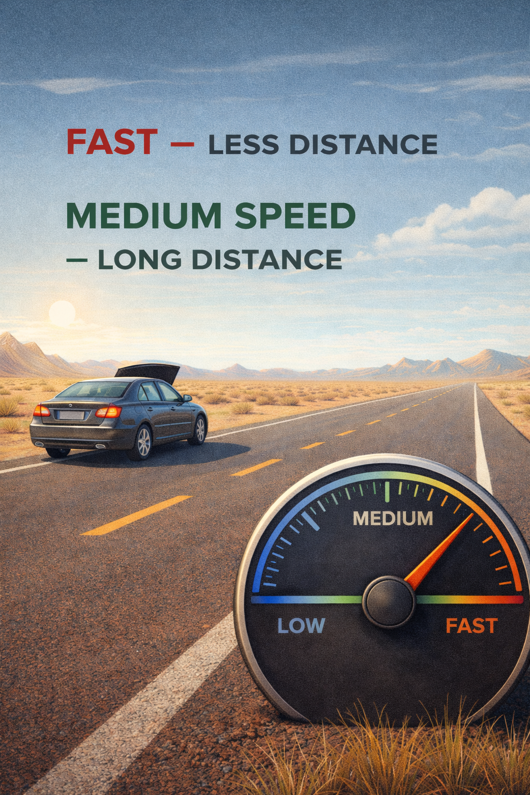

Matthew 6:27
“Can any one of you by worrying add a single hour to your life?”
If you have been driving a vehicle, you'd know that going about 60 mph gives you better mileage than driving at 100+, which sucks in fuel like a black hole.
Imagine you're driving in a desert highway in the west, and you notice that the fuel meter shows that there is hardly a gallon of gasoline left in the fuel tank, and the nearest town is about 25 miles away.

Now someone who doesn't take Matthew 6:27 seriously may panic and press the accelerator to get to the nearest town quickly at 100 mph. But unfortunately for him, the car turned into a hungry fuel monster and ran out of gas many miles before the destination.
Now if the same person had taken the words of our Lord seriously, he would have stayed calm, leaned on God, and may have worked out that driving at medium speed would be the best chance to reach the destination, and wouldn't have got stranded in the hot desert.
You can neither add an hour to your life nor add a mile to your car by being anxious.